The objective of this evaluation is to determine how well the Puyallup Public Library’s (PPL) catalog allows its patron to effectively browse and explore the unique collections the library offers. The evaluation will be conducted by using a commonplace patron discovery task to test the catalog’s browsability. Extensive notes will be taken on the strengths and weaknesses of the catalog. The catalog will be evaluated based on the success of the task and Nielsen’s 10 Usability Heuristics. Recommendations for improvement to the catalog will be based on the major weaknesses found during the evaluation and on the concept of “generous interfaces”. I will use the user interface designs of the websites of two major bookstores in the United States – Barnes & Noble and Half Price Books – to illustrate the concept of generous interfaces and provide examples of recommended improvements to the public library’s catalog.
This project follows the steps listed below:
What follows is an overview of the history of the Puyallup Public Library (Puyallup Public Library, n.d., section 5):
According to the Learn About the Library page on the Puyallup Public Library main website, their mission is to be the “heart of the community” (Puyallup Public Library, n.d., section 1). The Puyallup Public Library’s vision is to create a safe, welcoming environment where community members of all identities and backgrounds can enjoy free access to the library’s services, and physical and online resources. These resources include not just books, but also museum passes, games, puzzles, musical instruments, wellness kits, adventure kits, and online apps and resources.
The library defines six key values (Puyallup Public Library, n.d., section 3):
The objectives of the PPL are to serve the residents of the City of Puyallup by offering free access to its resources (Puyallup Public Library, n.d., section 4). These resources include its vast library collection (e.g. books, electronic databases, DVDs, audiobooks, games, kits, museum passes, and musical instruments), its services (e.g. access to computers, Wi-Fi, word processing software, meeting rooms), and its programming and outreach (e.g. book clubs and tax aid programs). Achievement of these objectives is dependent upon how easily the library’s patrons can access and explore its resources via the library catalog.
The main PPL site acts as a gateway to its resources, events, and services. Users with a library card can login to their account and view their holds and checked-out items. Without a library card, the library catalog is still accessible via a tile on the main site’s homepage.

Image 1. Screenshot of the Puyallup Public Library website homepage.
The tile highlighted in the image above links directly to the library catalog. The catalog is a separate site powered by SirsiDynix, a large provider of digital library solutions (SirsiDynix, n.d.). It is accessible without a library card, but certain personalization and circulation features are not available without logging in. The catalog has a different design and color scheme than the main PPL library site. The catalog’s main function is searching the library’s collection, therefore the design of the catalog is simple and revolves around the search bar.
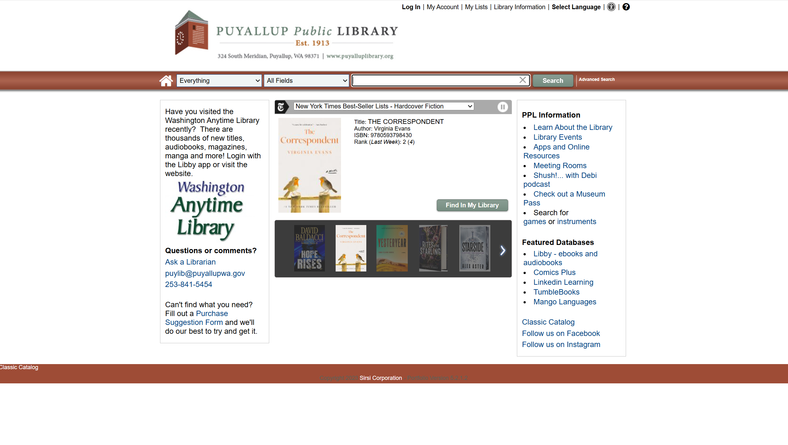
Image 2. Screenshot of the Puyallup Public Library catalog homepage.
The functionality described here is based on search and discovery, it does not include any general circulation functionality that requires the use of a library card.
The catalog includes a fixed header featuring a simple search bar – this is the main feature of the catalog and allows patrons to enter and search for keywords across the library’s diverse collection. By default the search bar searches everything in the library catalog, but patrons can use the dropdown to search in a limited number of different categories: Library Search, Asset Search, Audiobooks, YA Materials Only, Kid’s Stuff, and History Room Items. The search bar also searches all fields by default, but patrons can choose to narrow their keyword search to a limited number of available searchable fields, including: Author, Title, Subject, ISBN, Genre, and Series.
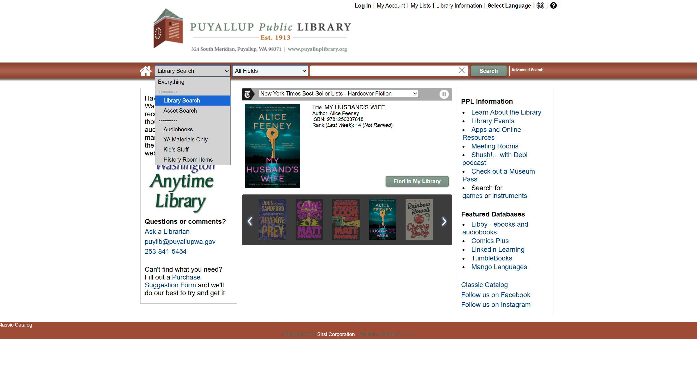
Image 3. Screenshot of the Puyallup Public Library catalog’s simple search bar with the search scope dropdown menu expanded.
The “Advanced Search” link on the simple search bar navigates to the advanced search page. This page allows for more complex search criteria. Patrons can execute keyword or phrase searches, choose to exclude items with certain keywords, and add additional limits to their queries. Patrons can limit results by format and language, and choose to include or exclude titles, authors, and subjects from their results. Searches can be limited to “Library Search” or “Asset Search”, or limited to a small number of predefined categories including: Audiobooks, YA Materials Only, Kid’s Stuff, and History Room Items. A query appears at the bottom of the page as the patron enters their search criteria.
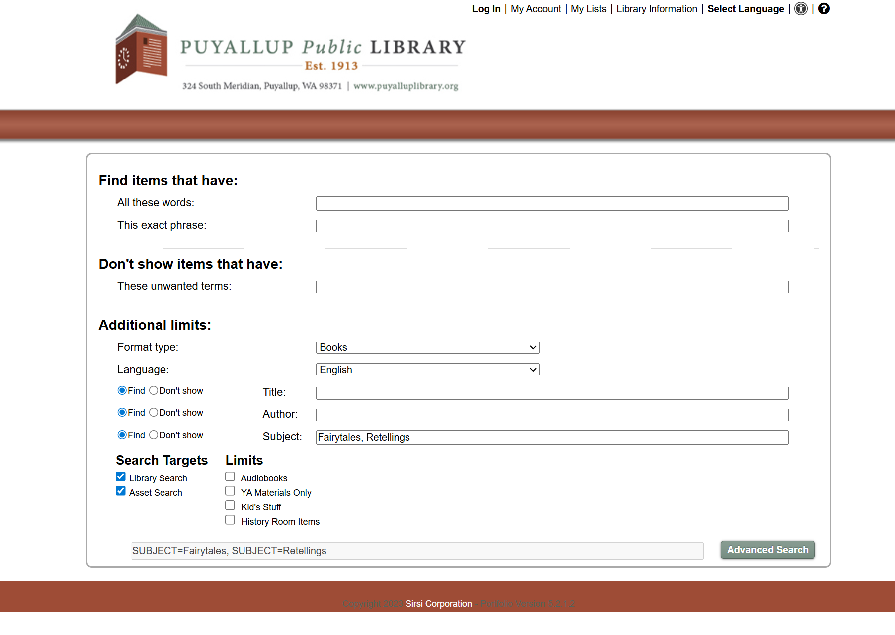
Image 4. Screenshot of the Puyallup Public Library catalog’s advanced search page with a query entered for “Fairytales”.
The search results page of a simple search and an advanced search are the same. Patrons are shown a list of available materials with information such as the title, author, format, whether the item is available, if there are any holds, and how many copies the library owns. This list can be toggled from a list view to a thumbnail view and sorted by relevance, publication date, title, and author. Search results can be limited by several facets (which are formatted as lists of checkable items on a sidepanel), including: format, language, author, genre, subject, and publication date range.
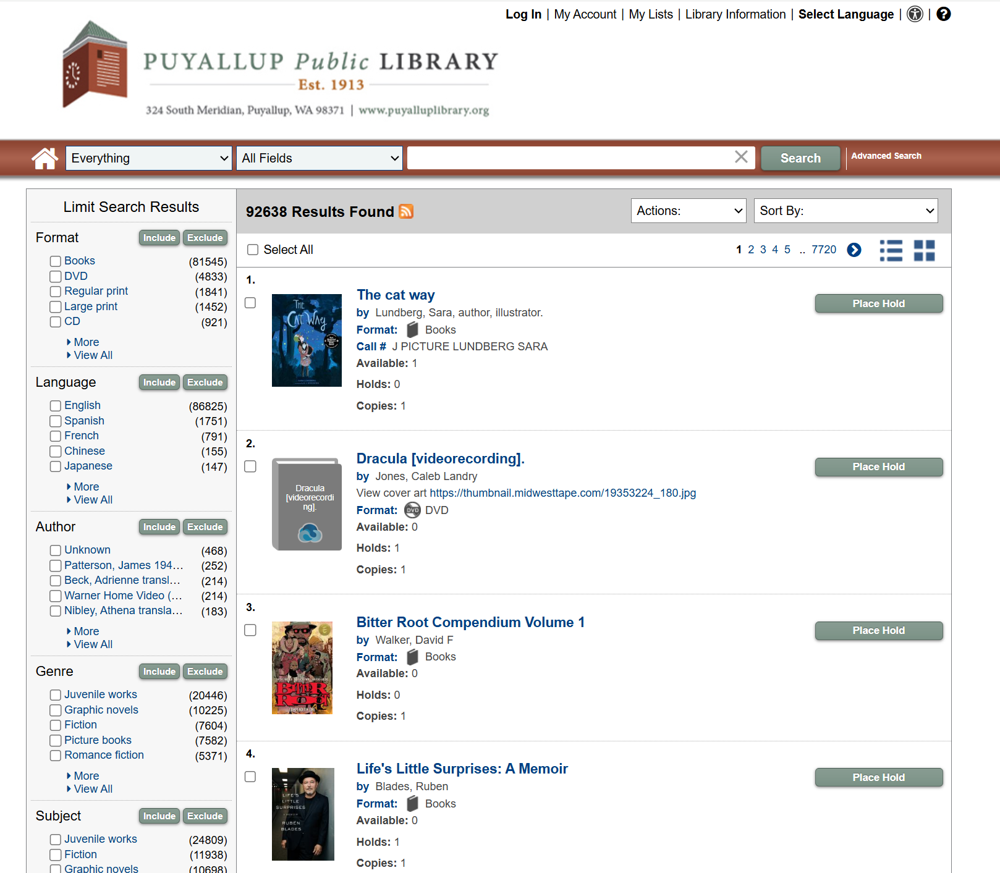
Image 5. Screenshot of the Puyallup Public Library catalog’s search results page.
The catalog homepage includes a widget that presents a scrolling list of New York Times Bestsellers with a button to find each book in the catalog. Patrons can pause the automatic scroll, manually click through each list, or use the dropdown menu at the top of the widget to view a different list.
Image 6. Screenshot of the Puyallup Public Library catalog’s New York Times Bestseller List widget.
The evaluation of the PPL catalog was based on a user task focused on discovery. For this task, the patron did not know exactly what they were looking for, but had an idea of the subject. The goal of this task was to evaluate how well the PPL catalog supported exploration and browsing tasks. The evaluation was based on Nielsen’s 10 Usability Heuristics. Extensive notes were taken during task completion on any helpful or limiting features of the catalog. Notes were then summarized after the task was completed and used to create a list of three major positives and three major negatives of the catalog. The results of the evaluation were focused specifically on browsing and discovery of materials; other observations such as branding inconsistencies were marked as “out of scope” for the objectives of this project.
A second grade teacher working at a local elementary school is starting a unit on fairy tales with her class. She wants to get her students excited about the unit by finding chapter books to read to them during lunch and books at their reading-level for them to take home. She wants books about fairies, fantastical elements, knights and princesses, talking animals, or other related themes.
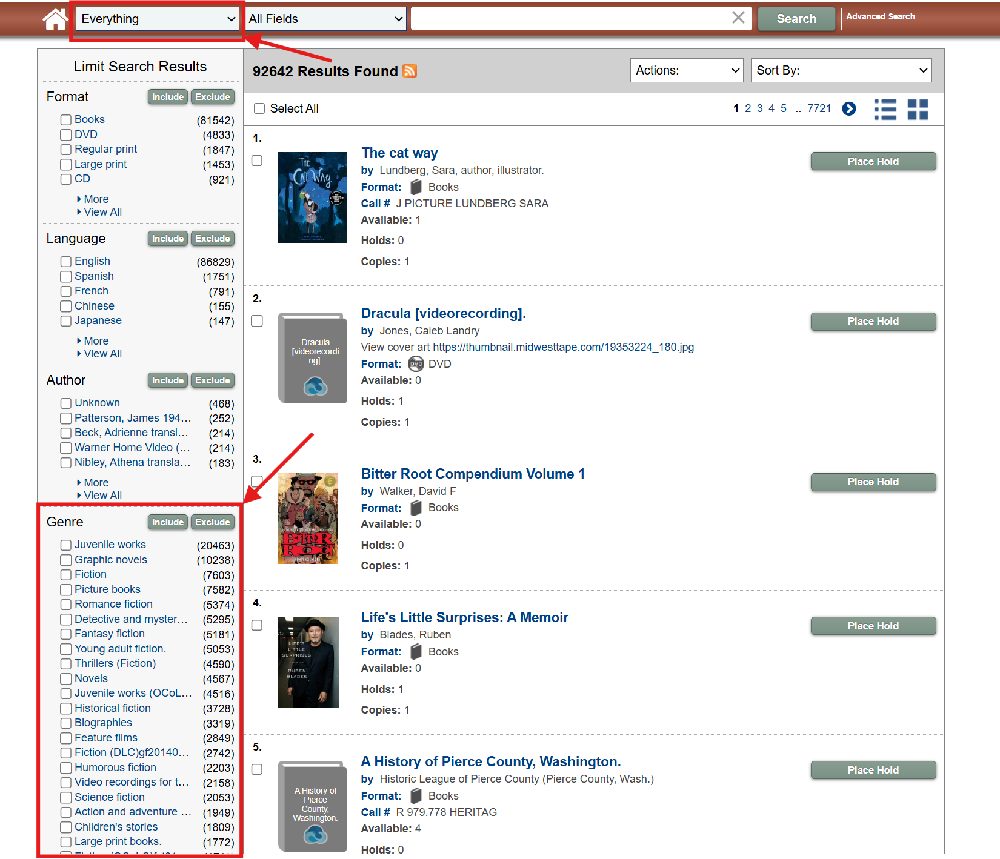
Image 7. Example of an "Everything" search using the Puyallup Public Library catalog search bar.
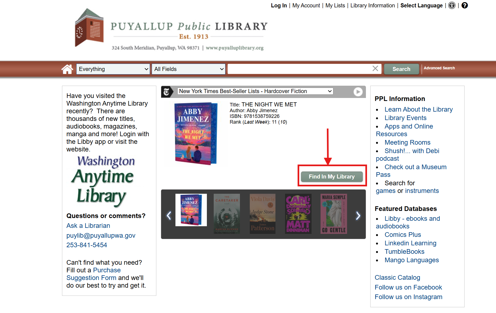
Image 8. Example of selecting the ‘Find In My Library’ button for a book on the New York Times Bestseller List widget.
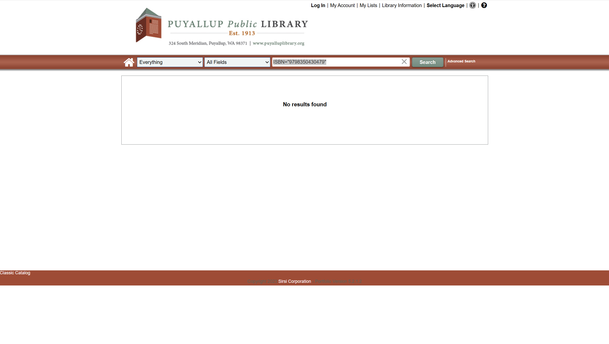
Image 9. Example of the ‘No results found’ page after selecting the ‘Find In My Library’ button for a book on the New York Times Bestseller List widget.
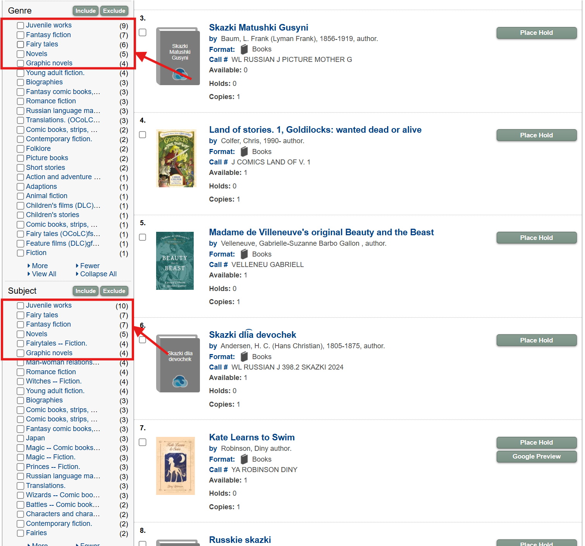
Image 10. Example of the search results page for ‘Fairytales’ from the Puyallup Public Library catalog with the ‘Genre’ and ‘Subject’ sections highlighted.
In his article “Generous Interfaces for Digital Cultural Collections”, published in 2015 in Digital Humanities Quarterly, Mitchell Whitelaw argues that closing off a collection and demanding users enter a search first is “ungenerous”. Whitelaw suggests that generous interfaces are ones in which collections are offered to the user for browsing and exploration, revealing the extent of each collection instead of hiding them behind search engines and demanding users come to the catalog with a clear search objective in mind. Whitelaw also notes that this humanistic approach to designing digital collection sites “would do more to represent the scale and richness of its collection” (Whitelaw, 2015, para. 3).
The following recommendations are based on the evaluation and analysis of the PPL catalog and were created by determining how the concept of generous interfaces could be applied to public library catalogs to achieve the goal of removing the limitations of a search-centric interface and allowing patrons to freely browse and explore library collections. The websites of two major United States bookstore chains (Barnes & Noble and Half Price Books) are used to illustrate these recommendations.
The first recommendation is to replace the New York Times Bestseller List widget currently on the PPL catalog homepage with curated lists of collection materials based on familiar categories such as “What’s New?”, “Staff Picks”, “Children”, “Young Adults”, “Fantasy”, and "Romance". While the New York Times Bestseller List widget is a step in the right direction, it does not offer a true sample of the actual content of the collection. These sample materials should be representative of only materials in the library’s collection and should include a “See More” link to take interested patrons to a page where they can continue browsing further and apply further filters to narrow the materials down by reading level, publication date, format, and availability. Including these lists on the homepage would offer patrons an understanding of both the scope and the makeup of the collection, and provide casual browsers with the ability to discover previously underutilized materials. This strategy is also useful if there is a special collection that the library wants to highlight, such as books curated for Black History Month or a curated list of ghost stories geared toward elementary schoolers for Halloween in response to a trick-or-treat event at a local school.
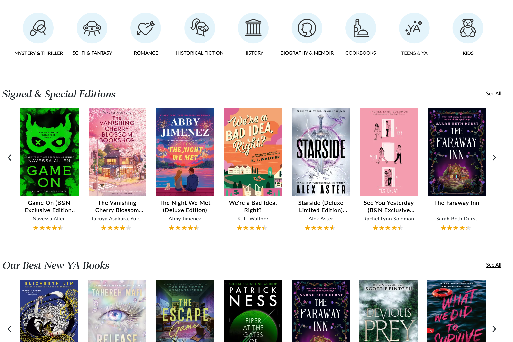
Image 11. Screenshot of the Barnes & Noble homepage with curated booklists.
Barnes & Noble offers samples of its available books by creating rows of booklists on their homepage and using familiar subject terms paired with logos to illustrate what genres and subjects are available to browse.
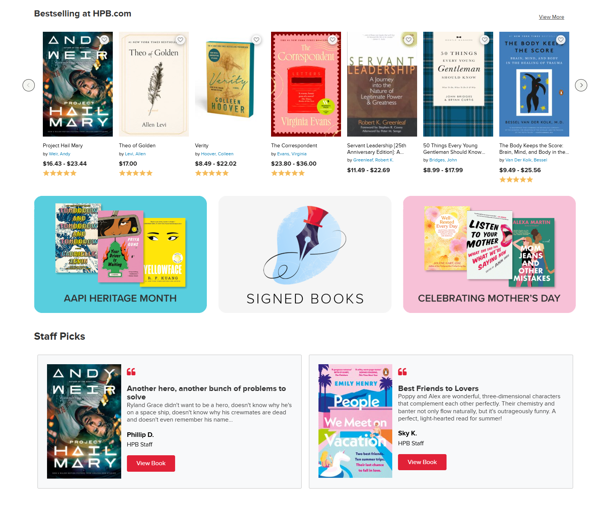
Image 12. Screenshot of the Half Price Books homepage with curated booklists.
Half Price Books follows the same pattern of booklists and also includes graphics for special collections and blurbs for staff picks, highlighting certain reads.
The next recommendation follows from the first, it is suggested that the catalog have dedicated pages for browsing materials based on certain popular genres or audiences to promote browsing and exploration. Patrons should be able to easily navigate to one of these pages by clicking on a link from a taxonomy, a “See More” link on a booklist, or an icon paired with a familiar genre term. These pages become dedicated spaces for browsing certain high-level genres or subjects and offer ways of navigating to more specific subjects. Complex subject and genre terms should only be provided in-context, such as within a taxonomy, or should include a short explanation so patrons know what they mean, how to use them, and how they are related to top-tier terms.

Image 13. Screenshot of the Half Price Books children’s fiction page.
The Half Price Books “Children’s Fiction” page is an excellent example of this recommendation:
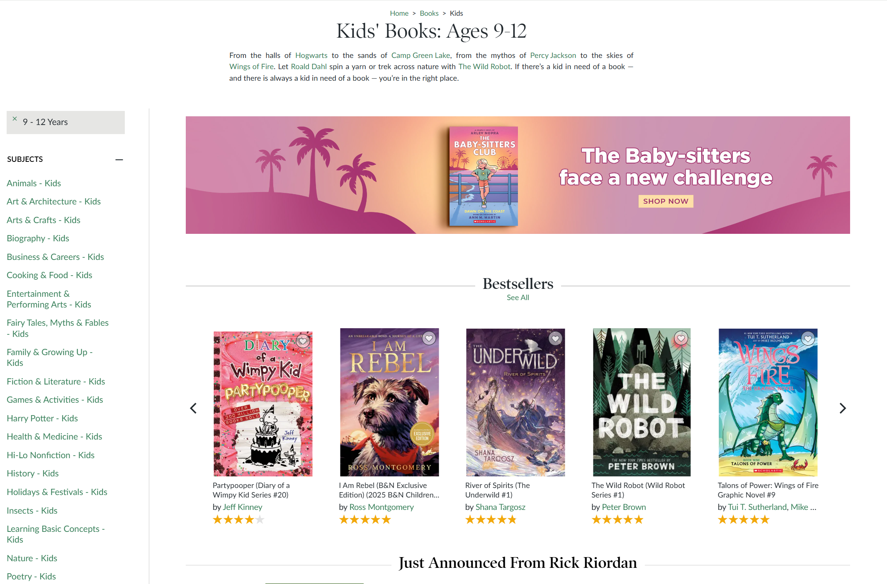
Image 14. Screenshot of the Barnes & Noble children’s fiction page.
Barnes & Noble takes a similar approach to a children’s page by also utilizing a breadcrumb menu, providing a short description of the page, and providing sample booklists of the materials. Notice, on the lefthand side panel, how subjects are listed in a more user-friendly format and in alphabetical order.
Create a dedicated page on the catalog with lists of hyperlinks to the subject pages of high-level subjects so patrons have the opportunity to see all high-level subjects covered in the collection on one page and can decide where to focus their browsing. Replace complex subject and genre terms with user-friendly terms that the most inexperienced patron would recognize and understand. Provide granular subjects only within the context of a taxonomy and clearly show the patron how lower-level terms are related to top-tier terms. The best way to implement this would be via an online taxonomy where patrons could see how top-level and low-level subjects are related to each other either on the browse categories page or within each subject page. Users can then select these lower-level subjects as hyperlinks to browse materials under a more specific subject. This not only provides another method for browsing and exploration, but also helps new patrons understand how the collection is organized.
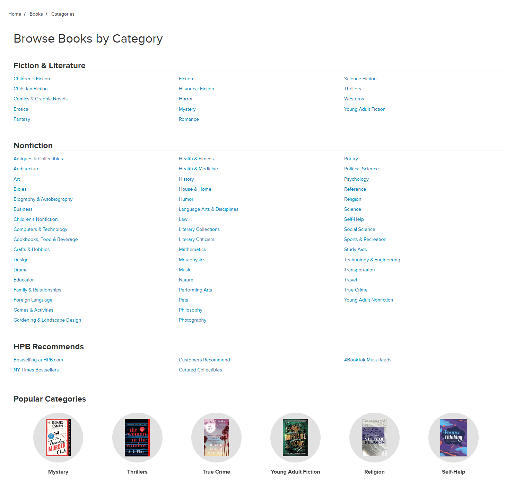
Image 15. Screenshot of the Half Price Books browse categories page.
Half Price Books provides a page of hyperlinks to its books by category, with additional links for curated collections. The language used for each of these categories is simple and accessible. There is also a section at the bottom of the page for popular categories with a sample item selected to represent each category.
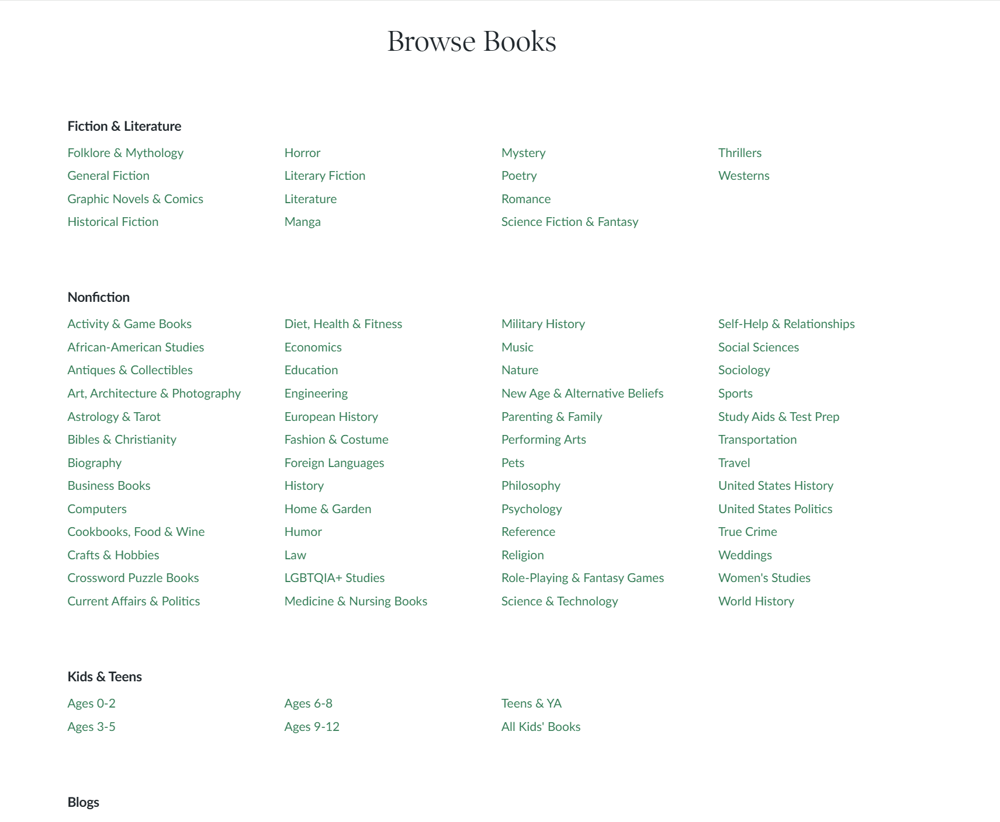
Image 16. Screenshot of the Barnes & Noble browse categories page.
Barnes & Noble also includes a browse books page with fiction and non-fiction books broken down by categories. There is a dedicated “Kids & Teens” section that defines buckets of different age ranges. Libraries could potentially copy this method of segmentation by using reading level.
The PPL is a small public library dedicated to meeting the needs of the members of its community and ensuring that their unique collection of materials are accessible. An evaluation of the PPL catalog, based on a browsing and exploration task, found that though the catalog offers a simple design focused on searching the library’s collection, there were very limited options for actual, meaningful browsing of the collection and the language used for genre terms and subject terms was not accessible to non-researchers. Applying the concept of generous interfaces and using the websites of major bookstores (i.e. Barnes & Noble and Half Price Books) as illustrative examples, three recommendations were made to improve the browsability of the current PPL catalog. These recommendations included: providing samples of the library’s collection on the catalog homepage, adding dedicated subject pages to facilitate browsing, and adding a “browse categories” page populated with hyperlinks to subject pages represented by user-friendly subject terms. Though the PPL library catalog has a unique collection, these materials will not be recognized by its community unless they can easily be browsed and accessed. Given the budget constraints and system limitations involved in certain out-of-the-box library software, I understand that the recommendations made will require significant cost and upfront investment in custom development. But given the ubiquity of bookstores and digital retailers, implementing these changes may serve as a way to attract attention to the library’s collections using the common interface components its patrons interact with regularly.
Puyallup Public Library. (n.d.). Learn about the library. https://www.puyallupwa.gov/632/Learn-About-the-Library
SirsiDynix. (n.d.). About Us – SirsiDynix. https://www.sirsidynix.com/about-us/
Whitelaw, M. (2015). Generous interfaces for digital cultural collections. Digital Humanities Quarterly, 9(1). https://doi.org/10.63744/4pg836gkjaeb